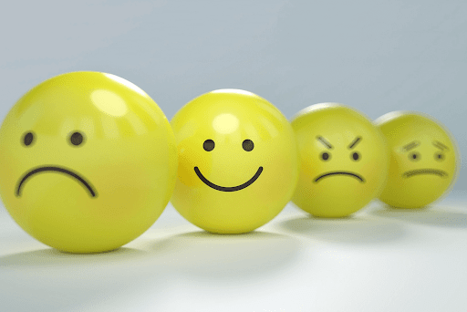
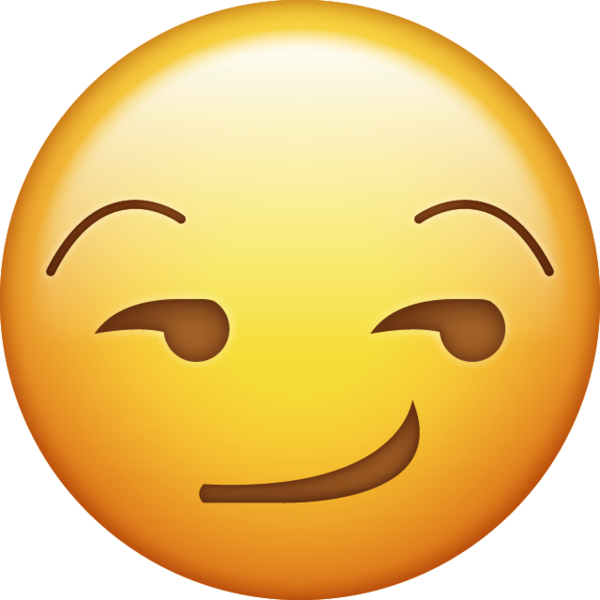
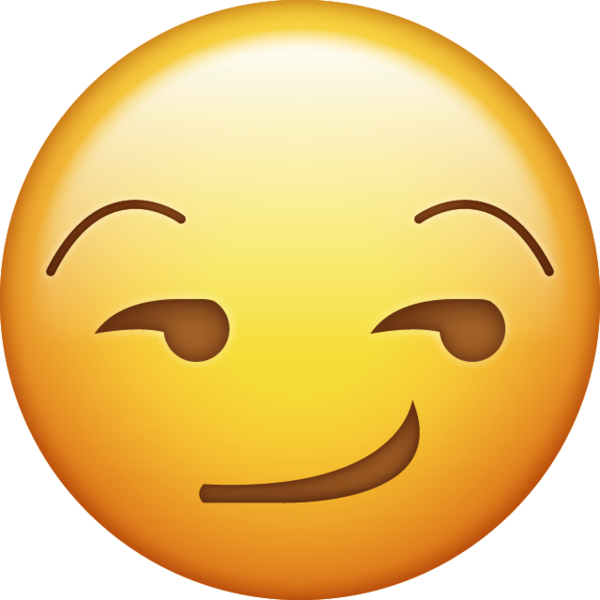

Мои успехи в учебе
| Предмет | Преподователь | Оценки |
| Архітектура обчислювальних систем | Ломакін О.М. | 5 |
| Дискретна математика | Татарінова О.А. | 3 |
| Нарисна геометрія та комп'ютерна графіка | Матюшенко М.В. | 3 |
| Об'ективно орієноване програмування | Водка О.О. | 3 |
| Диференційні рівняння | Міхлін Ю.В. | 3 |
| Іноземна мова | Вракина В.В. | 3 |
| Правознасвто | Кузьменко О.В. | 4 |
| Фізична культура | Ширяєва С.В. | 3 |
Моя любимая 3D модель Kликай
-
Media_player
- Форсаж
- 13 район
- Сам у дома
- Наруто -
 Настроение
- Xорошее
- Pаздражённое
- Дружелюбное 

-
Цитата о жизни ...
Если хочешь узнать человека, не слушай, что о нём говорят другие, послушай, что он говорит о других...
Kраткий экскурс по моим личносным качествам:
- Учусь- Верный
- целеустремлённый
Слайдер
Немного ещё...Я и увлечения

Counter-Strike: Global Offensive (CS:GO; с англ. — «Контрудар: глобальное наступление») — многопользовательская компьютерная игра, разработанная компаниями Valve и Hidden Path Entertainment. Выпуск игры для персональных компьютеров на операционных системах Windows и macOS, также игровых приставках Xbox 360 и PlayStation 3 состоялся 21 августа 2012 года. Версия игры для Linux была выпущена в 2014 году, а в 2016 году игра, в рамках программы обратной совместимости, стала доступна на Xbox One.
Футбо́л — командный вид спорта, в котором целью является забить мяч в ворота соперника ногами или другими частями тела (кроме рук) большее количество раз, чем команда соперника. В настоящее время самый популярный и массовый вид спорта в мире. Игрок, играющий в эту игру — футболи́ст.
Меня зовут Ростислав,можно просто Ростик,
хочу работать на роботе мечты.
Пишу свой веб_сайта. Лучшая работа...
Есть опыт в розработках: в прошых лабах много писал
для отличной оценки_(5).
Темы — разные, очень разные... Лучшие статьи:...,мои..)
Как узнать подробнее о совей оценке?
Если есть возможность получить 38 балов за задание,
буду очень рад сказать вам спасибо.)
Контактная информация
- Телефон: 0632270453.
- Почта: myakiw1@ukr.net
- Адрес: Беёво Липоводолинский район Сумская обл. улица Лесная.
Соц-сети
- Инстаграм: __rostifan__.
- Телеграм: @Rostifann
- Вайбер: 0632270453.